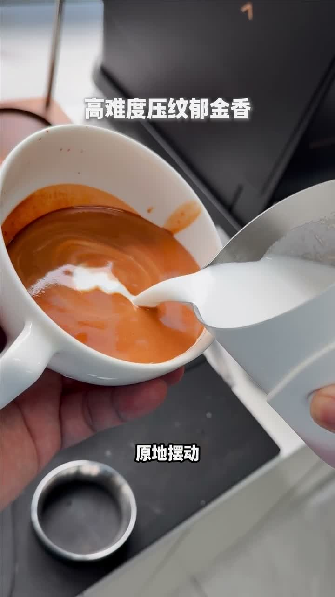
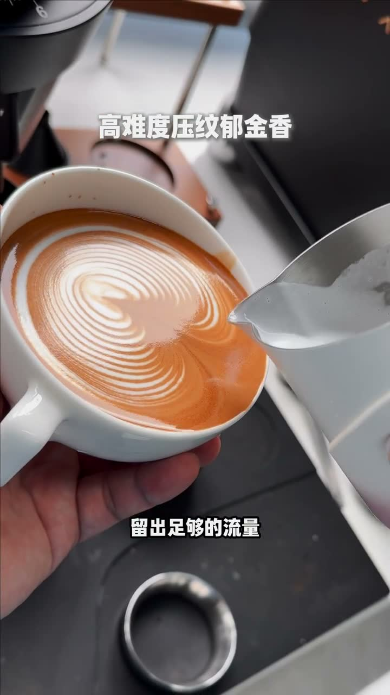
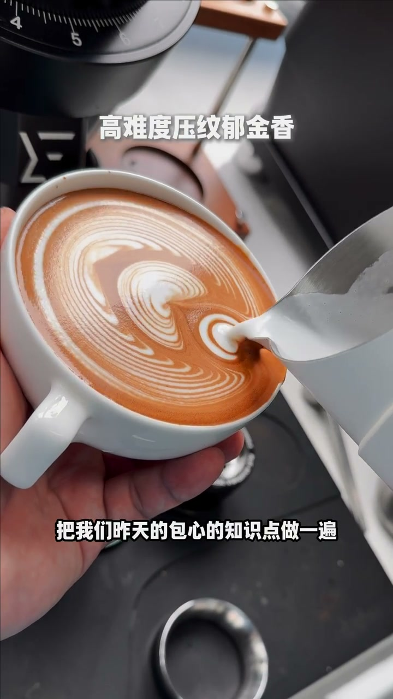
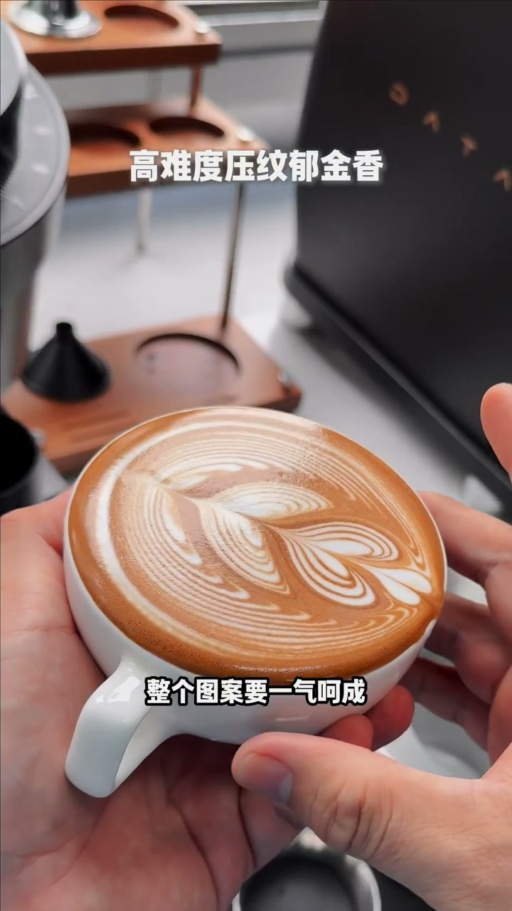

高难度压纹郁金香
查看原视频核心要点
- 高难度压纹郁金香，全程四个步骤一气呵成
- 引流开底 → 大流量出纹路 → 包心成形 → 收尾点缀
- 关键技巧：原地摆动后前推、大流量确保纹路清晰
第一步：引流开底
在液面中心开始原地摆动，然后往前推，为后续纹路留出空间。这一步关键是稳定的小流量摆动，避免出现大气泡。

第二步：大流量出纹路
加大流量，在推到底的位置继续摆动，让奶泡浮出清晰的压纹。流量不够会导致纹路模糊。

第三步：包心知识点
运用之前学过的"回包"动作，将纹路包裹成形。整个图案需要一气呵成，不能停顿。

第四步：收尾点缀
最后在顶部点一个小点，让整个图案更完整。收尾要干脆利落，不要拖泥带水。

详细文字转录
以下内容按 Whisper 原始分段完整呈现，可能包含识别误差。
- [0:00]我们引流开底哦 原地摆动 摆动 开始摆好往前推
- [0:06]ok 流出足够的流量 做出第二层
- [0:11]大流量出纹路 然后把我们昨天的包心的知识点做一遍 34 ok 最后上面再点一点啊 收尾
- [0:19]这个是个比较高难度的压弯硬金箱 整个图案要一气呵成 大家赶紧练起来